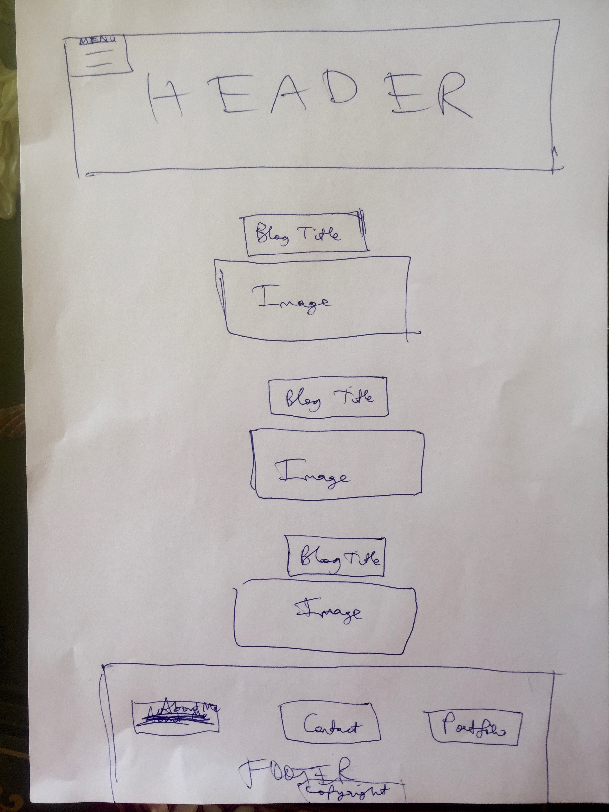
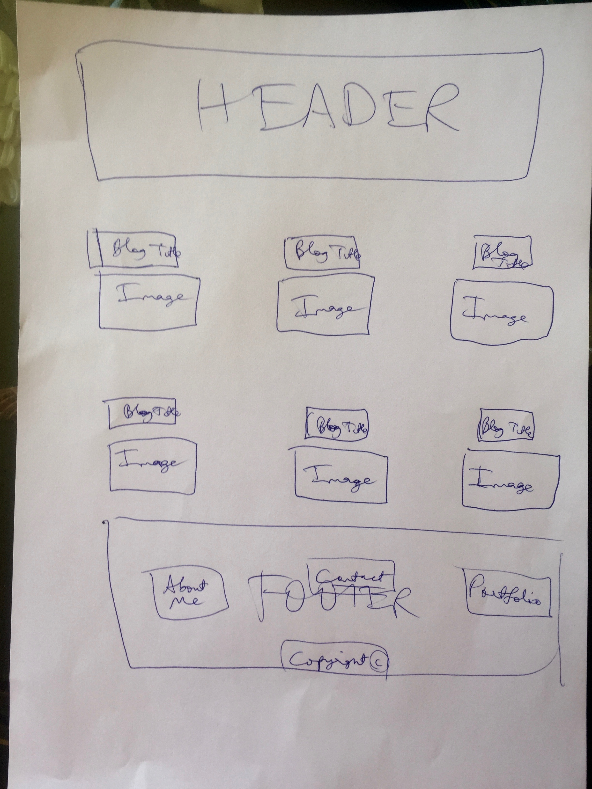
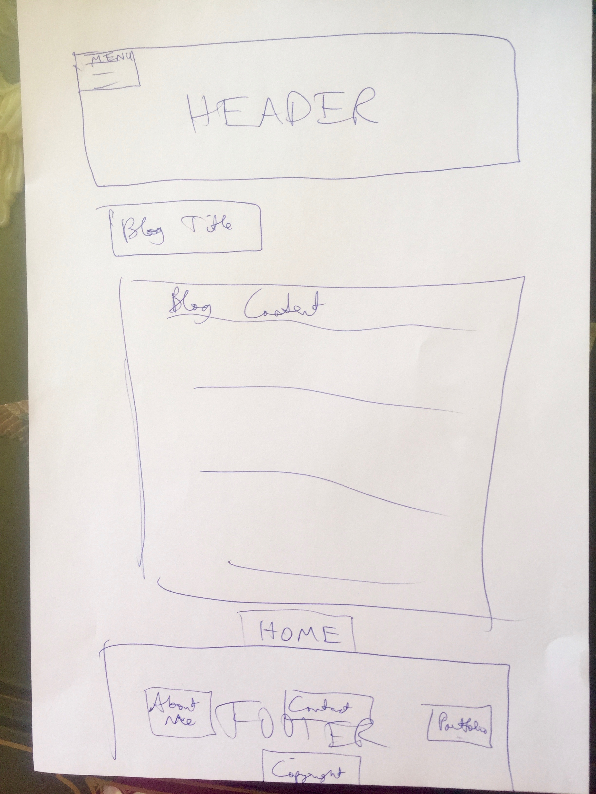
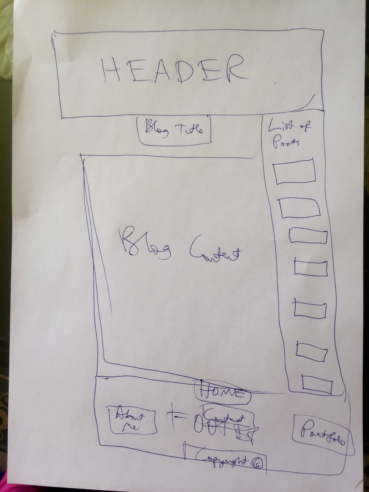

What is a responsive site, and why is responsiveness important?
A responsive site is one whose layout and design change as the browser is resized and on devices with different-sized screens. Generally a responsive site has been designed to be user- friendly and aesthetically pleasing for various different screen sizes, and it may have added features on larger screen sizes.
What is mobile first design, and why is it important?
Mobile first design is responsive web design that’s designed first of all for a mobile-sized screens, and then extra features are added/the layout is changed/more code is run for progressively larger screen sizes. It’s important because starting from the constraints of a smaller screen means that the site must be designed to look good and have all its basic features (but not excess, non-necessary features) present on smaller screens, and then at larger screen sizes additional features and more complex formatting can be added in progression. This order for design involves building something from its smallest, most basic version first - and making this attractive and functional - before adding extra features, and means that smaller screen sizes aren’t compromised as much as they would be if a desktop-first approach were taken (where they might be treated as afterthoughts and not be as functional or attractive as they would be if a mobile-first approach were taken). The other important thing about it is that larger screen sizes are generally correlated with more processing power, so the extra code that only applies to larger screen sizes is only run on systems that can handle it while still retaining their speed and efficiency (whereas if the opposite approach were taken, mobile devices may have to run a lot of unnecessary code).
What are frameworks, and what are their pros and cons?
A framework is a collection of files that provide a pre-designed code structure (e.g. using JavaScript, HTML, and CSS) that can make it much easier and more efficient to build a site with impressive appearance and functionality without having to write all the code from scratch. One of the drawbacks of using frameworks, however, is that they tend to create limitations in terms of what you can do and how you can do it, and if you want to add features that aren’t straightforward to add as part of the framework, it can be difficult to do this.
What is a wireframe, and why do we use it?
A wireframe is an image that’s been sketched or constructed using a wireframe programme that captures the basic functional elements and intended layout of a web page. It’s similar to the blueprint an architect uses to construct a house in that it provides a plan for how the site will look and function. We use wireframes because they help us visualise how a page will look and plan for usability, attractiveness, and how users’ eyes will naturally scan the page.
   What aspects of your wireframes did you find difficult to implement, and why?
I actually totally ended up building my site to look quite different from the wireframes I drew up, as I decided on an image I wanted for my background and then built the site around this. So perhaps what I found most difficult to implement about my wireframes was actually sticking to them! I think I possibly find it hard to visualise a site design when there are elements (e.g. a background image) that I haven’t decided on yet, as these seem to affect how I envisage things quite heavily.